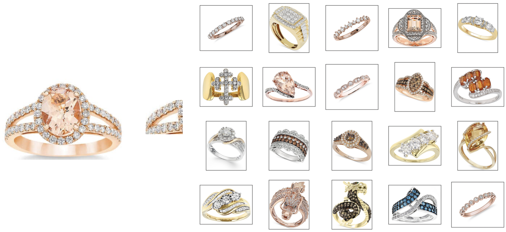

珠寶首飾搜圖推薦系統
Image Retrieval Recommendation
System of Jewelry
2021/08/03
大綱
- 研究動機
- 相關技術介紹
- 自動化智慧爬蟲系統
- 首飾推薦系統架構與流程
- 局部特徵資料庫之建立與比對
- 實驗結果與比較
- 結論
研究動機
研究動機1
- 協助珠寶銷售人員即時找到符合客戶需求樣式的珠寶。
- 提供珠寶設計人員靈感，找到類似的設計。
研究動機2
- 與一般以圖搜圖不同，首飾在搜尋時並不能僅僅依賴於首飾的外型，仍須考量到首飾的細節。
搜圖推薦系統相關技術介紹
CROW pooling 特徵提取
CROW pooling 特徵提取
CROW pooling是一種可以尋找物件的特徵提取池化方法， 透過構建Spatial權重以及Channel權重，可以加大突出區域的權重，降低非物體區域的權重。
VGG16神經網路
由最後一個pooling開始接入Crow pooling
CROW pooling 流程圖
Spatial Weight
- 透過將多個特徵圖疊加後得到數值非零且響應較大的區域，通常就是圖中物體所在的區域


空間權重詳細計算
Channel Weight
與文字探勘中的TF-IDF權重方法類似，
若是一個特徵圖與其他特徵圖相比特徵區域越少，代表該區域越重要，權重就會較高，反之則越低。

Channel Weight
- 對每個通道計算通道的稀疏性
- Log(所有通道的稀疏性/個別通道的稀疏性)
最終得到的重點區域
左：原圖 右：重點區域
自動化智慧爬蟲相關技術介紹
Focused Web Crawler
聚焦式爬蟲
Focused Web Crawler
聚焦式爬蟲
- 能使爬蟲的內容更準確
- 下載前先做檢查，減少網絡流量
聚焦式爬蟲的架構
爬蟲的演算法
爬蟲的演算法
深度優先搜尋法(DFS)
爬蟲的演算法
廣度優先搜尋法(BFS)
爬蟲的演算法
最佳優先搜尋法
- 透過簡單得分類器，事先排序各個網站的優先權，在按照優先權進行爬蟲，分類器的發法可以是SVM、天真貝式等等
比較
| 深度優先 | 廣度優先 | 最佳優先 |
|---|---|---|
| 較有效率 | 準確率高 | 折衷 |
| 不會因一直換網頁下載而浪費時間 | 左右兩個鄰居節點相關性大於上下節點 | 透過分類器排序決定爬取順序 |
深度優先搜尋法可能會陷入無限迴圈之中
google 的搜尋方法
google 搜尋演算法本論文的爬蟲方法
- 使用google搜尋引擎所搜尋到頁面當作所有爬蟲程式的種子連結
- 對於剩下的網頁使用廣度搜尋法，當廣度搜尋法爬取到一定深度後更換頁面
自動化智慧爬蟲系統
何謂自動化智慧爬蟲?
何謂自動化智慧爬蟲?
自動化

能夠自行爬取網頁，
並對品質進行過濾
智慧

使用深度學習分類
爬取下來的圖片
流程
1.關鍵字檢查
2.去除相同網址
1.去除背景複雜
2.去除長寬太小
3.相似度比對
1.手環
2.戒指
3.耳環
4.項鍊
5.其他
爬蟲系統實驗結果
- 總共蒐集了43076筆資圖片(剔除大小不符、背景複雜的圖)
- 正確的有33254筆
- 準確度約為77.1%
爬蟲系統實驗結果
手環爬蟲結果:
爬蟲系統實驗結果
項鍊爬蟲結果:

爬蟲系統實驗結果
戒指爬蟲結果:

爬蟲系統實驗結果
耳環爬蟲結果:

首飾推薦系統架構與流程
系統分層
特徵提取伺服器之流程
- Resnet50所得到的特徵較偏向全域特徵
- VGG16加上crow pooling的特徵較偏向局部特徵
Resnet 50
VS
VGG16+crow pooling
終端伺服器之流程
加權計算
- 優先使用ResNet50的相似度，因人眼對全域特徵較敏感。
- 當ResNet50的相似度較低時會使用VGG16加上crow pooling作為輔助，放大突出的部位比較。
局部特徵資料庫之建立與比對
局部特徵資料庫之建立與比對
目的：提供使用者框選局部區域來做尋找
局部特徵搜尋之流程圖
spatial weight局部搜尋
使用spatial weight 得到圖片中較為突出的部分，而人類的視覺焦點，也較容易選擇突出的部分。
將空間權重圖還原大小
還原成原圖大小的空間權重圖

取得突出區域
將權重高的部位裁剪下來，取得突出區域
9宮格及25宮格切割
- 使用者在框選時可能不會框選整個突出部位，為增加比對到的機率，使用宮格切割。
- 宮格切割的好處是可以讓圖中的每個區域都被使用到，不會有遺漏的部分。

隨機切割
對整個原圖做大小不等的隨機切割50次
- 增加更多的比對的樣本，增加比對到的機率。
- 避免例外，若客戶要找的細節剛好在預測的區域之外有相似的部分，也能夠找到。
使用者端的處理流程圖
實驗結果與比較
局部資料庫建構方法的比較
- T1：未進行切割
- T2：重點區域九宮格加二十五宮格加原圖隨機切割50次
- T3：隨機方式做 500 次切割
項鍊
目標圖片對 T1 資料庫之搜尋結果
項鍊
局部圖片對 T2 資料庫之搜尋結果
項鍊
局部圖片對 T1 資料庫之搜尋結果
項鍊
局部圖片 T2 VS T1搜尋結果
戒指
目標圖片對 T1 資料庫之搜尋結果
戒指
局部圖片對 T2 資料庫之搜尋結果
戒指
局部圖片對 T1 資料庫之搜尋結果
戒指
局部圖片 T2 VS T1搜尋結果
手環
目標圖片對 T1 資料庫之搜尋結果
手環
局部圖片對 T2 資料庫之搜尋結果
手環
局部圖片對 T1 資料庫之搜尋結果
手環
局部圖片 T2 VS T1搜尋結果
局部搜尋資料庫建構結果比較
| 資料庫名稱 | T1 | T2 | T3 |
|---|---|---|---|
| 特徵提取時間 | 約 20min | 約 6hr | 約 74hr |
| 搜尋一次的時間 | 約 30sec | 約 2min | 約 20min |
| 儲存空間(檔案數) | 少 | 中 | 高 |
| 搜尋結果 | 最差 | 好 | 最好 |
結論
結論
結論
- 提供了一個能夠自動化建立資料庫的方法。
- 提供了兩種方法來讓客戶尋找到類似的產品
- 全圖搜尋
- 局部區域搜尋
感謝聆聽
VGG16神經網路
由最後一個pooling開始接入Crow pooling
google 的搜尋方法
google 搜尋演算法空間權重詳細計算
Resnet 50
VS
VGG16+crow pooling
隨機切割500之實驗結果
T2vsT1
隨機切割500之實驗結果
T2vsT1